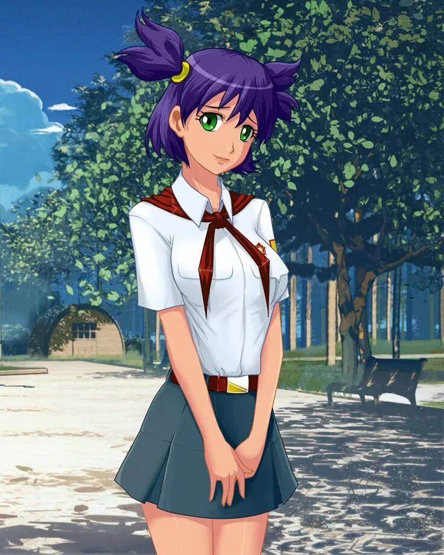

девушка среднего роста, с изумрудно-зелёными глазами, с тёмно-фиолетовыми волосами, собранными в два торчащих в разные стороны хвоста.
Лена страдает меланхолией, поэтому она асоциальна, крайне застенчива. Любит читать книги и сторонится быть в центре внимания.
При всём этом, в определенных ситуациях ведёт себя уверенно и хладнокровно. Влюблена в главного героя, отчего при встречах с ним застенчивость Лены проявляется сильнее.
Но узнав Семёна получше, Лена может разговаривать с ним достаточно свободно (и порой даже очень экспрессивно).